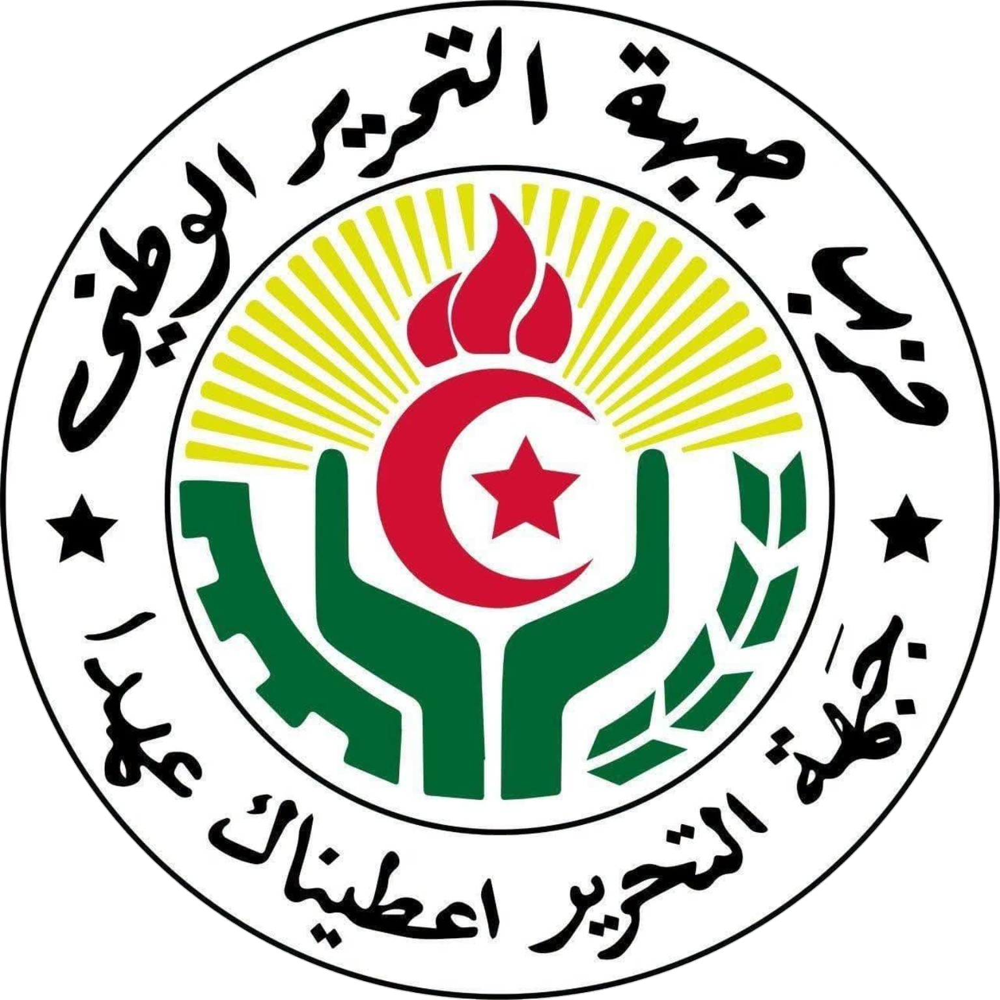
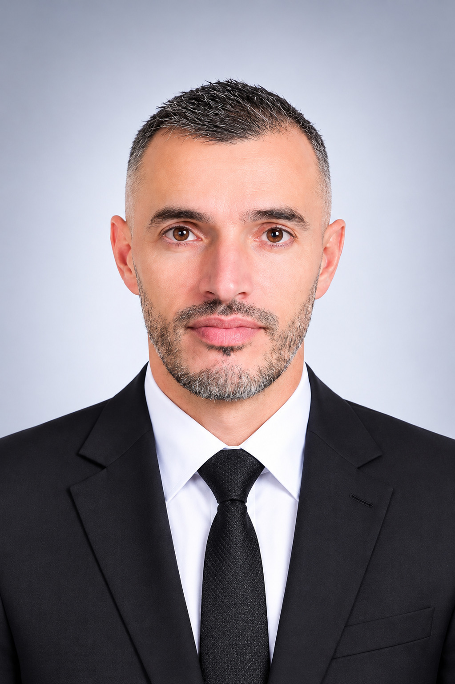
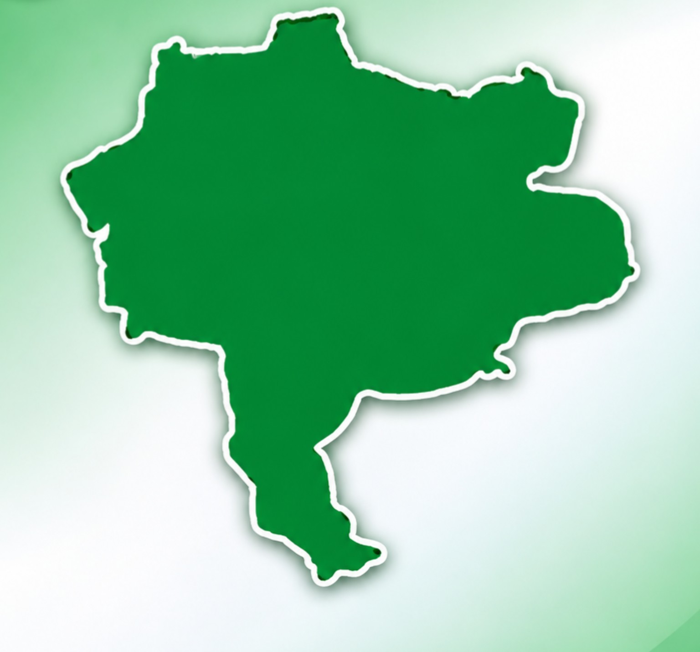
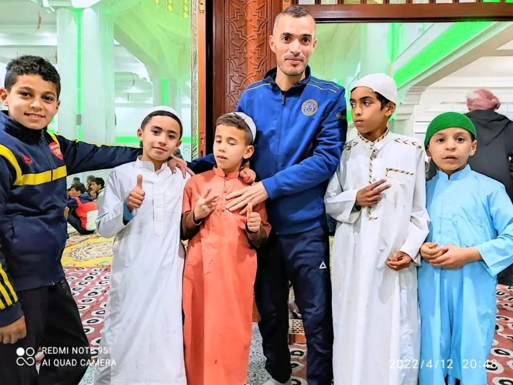
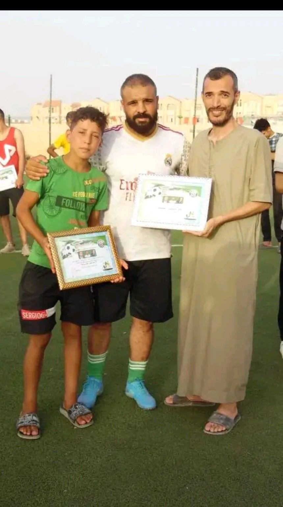
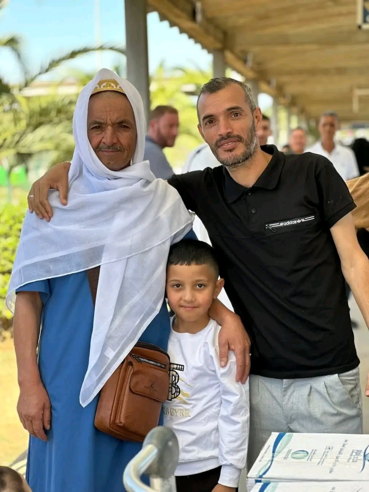
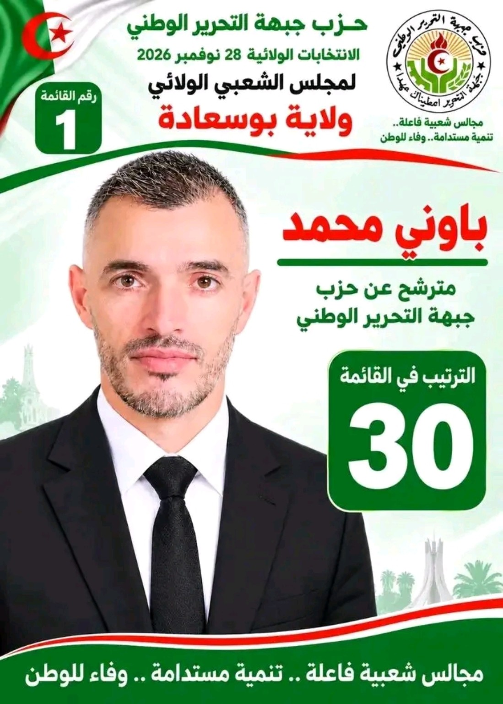
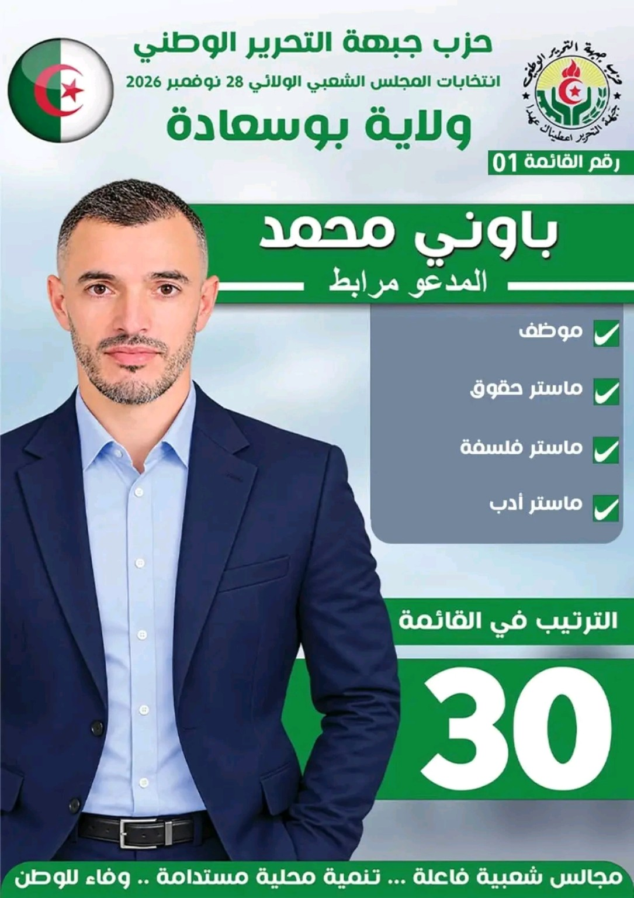

ليسانس
الحقوق

محمد باونيالموقع التعريفيإطار بمحكمة بوسعادة · أمين ضبط رئيسي
مسار مهني وتكوين علمي متنوع، وانتماء إلى منطقة سيدي عامر.

محمد باوني، ابن منطقة سيدي عامر، وإطار بمحكمة بوسعادة، يشغل رتبة أمين ضبط رئيسي.
يمتلك مساراً علمياً متنوعاً، تُوّج بحصوله على شهادة ليسانس في الحقوق، وشهادتي ماستر 2 في كل من الأدب والفلسفة، بما يعكس تنوع اهتماماته العلمية والمعرفية.
يجمع مساره بين التكوين القانوني والاهتمام بالأدب والفكر الفلسفي، وهي مجالات تشكل رصيداً معرفياً في فهم المجتمع وقضاياه.
يخوض محمد باوني انتخابات المجلس الشعبي الولائي عن حزب جبهة التحرير الوطني، ضمن الدائرة الانتخابية بوسعادة، ولاية بوسعادة، المقررة يوم 28 نوفمبر 2026، تحت رقم القائمة 01 ورقم المرشح 30.
إطار بمحكمة بوسعادة. لم تُضف تواريخ أو مسؤوليات أخرى لعدم توفر معلومات مؤكدة عنها.
الحقوق
الأدب
الفلسفة
المحاور التالية مسودة أولية للمراجعة والاعتماد من طرف المرشح، ولا تمثل تعهدات رسمية معتمدة في صيغتها الحالية.
متابعة صيانة الطرق، تحسين الربط بين البلديات والمناطق الريفية، تعزيز النقل العمومي ومعالجة النقاط السوداء المرورية.
تحسين التزود بالمياه، تجديد الشبكات، معالجة التسربات ودعم مشاريع الحماية من الفيضانات.
تحسين توزيع الهياكل الصحية، المطالبة بالتجهيزات الطبية ودعم الخدمات بالمناطق البعيدة.
متابعة صيانة المؤسسات التربوية، تحسين ظروف التمدرس، ودعم التكوين المهني والمرافق التعليمية.
دعم الفلاحين ومربي المواشي، تطوير مشاريع السقي وتحسين المسالك الفلاحية وتشجيع الاستثمار.
تثمين الموروث الثقافي والمعماري لبوسعادة، وتشجيع السياحة والحرف التقليدية والصناعات المحلية.
متابعة تهيئة مناطق النشاطات، تشجيع المؤسسات الصغيرة والمتوسطة ومرافقة حاملي المشاريع.
تحسين المنشآت الرياضية، دعم الجمعيات وتوفير فضاءات للشباب وتشجيع المواهب المحلية.
تحسين النظافة وجمع النفايات، توسيع المساحات الخضراء وتحسين الإنارة وتهيئة الأحياء.
متابعة المشاريع ونقل انشغالات المواطنين ومتابعة تنفيذ البرامج والاعتمادات وتعزيز التواصل مع المجتمع المدني.
تنبيه: هذا المحتوى مقترح للنقاش والمراجعة.
الخريطة البصرية المرسلة ضمن مواد المشروع.

صور من المواد التي قدمت للموقع. ستضاف عناوين وتواريخ الأنشطة بعد تزويدنا بتفاصيلها.





يمكن زيارة الحساب الشخصي على فيسبوك.